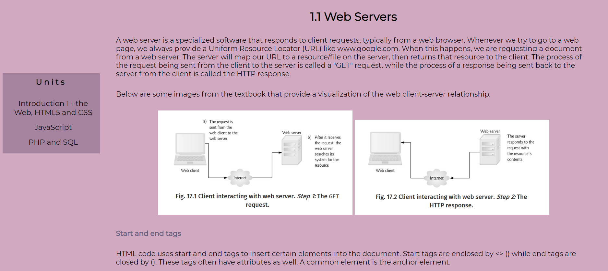
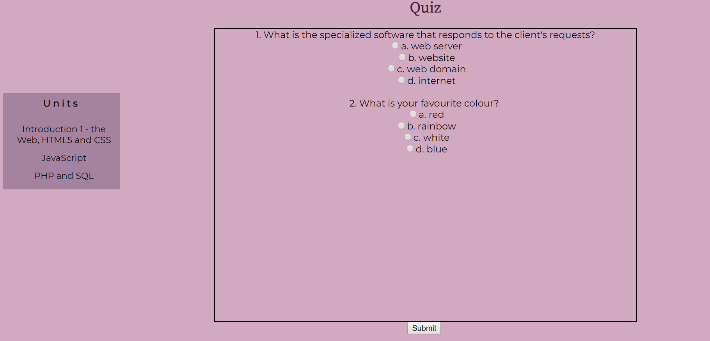

EML Guide
Our EML makes it easy to create lessons and quizzes to deliver your course to your students. We use tags to create different elements
- tags will wrap around some text to create that element. If this is unclear to you now, don't worry, our guide makes it easy to understand.
Once you have written up your content in EML, our parser will convert it into HTML code which is more readable for users.
Here is a short example of EML for a lesson:
<subsection>
<subtitle> 1.1 Web Servers </subtitle>
<text>
A web server is a specialized software that responds to client requests, typically from a web browser.
Whenever we try to go to a web page, we always provide a Uniform Resource Locator (URL) like www.google.com.
When this happens, we are requesting a document from a web server. The server will map our URL to a resource/file on the
server, then returns that resource to the client. The process of the request being sent from the client to the server is
called a "GET" request, while the process of a response being sent back to the server from the client is called the HTTP response.
</text>
<text>
Below are some images from the textbook that provide a visualization of the web client-server relationship.
</text>
<image>web</image> <image>web2</image>
<subsubsection> Start and end tags </subsubsection>
<text>
HTML code uses start and end tags to insert certain elements into the document. Start tags are enclosed by <>
(&lt;html&gt;) while end tags are closed by &lt;/&gt; (&lt;/html&gt;). These tags often have attributes as well. A common element is
the anchor element.
</text>
</subsection>
The following tags are available when creating a lesson:
- <subsection>: Create a new subsection for the lesson. Allocating separate subsections for the lesson will make the content more organized and easy to follow.
- <subtitle>: Name your subsection.
- <text>: Create a new paragraph.
- <image>: Insert an image. You may upload and name an image to our database. Use this tag to insert that image by referencing it by name
- <subsubsection>: Name a subsubsection inside a subsection.
Once rendered, the website will appear like so:

Note that if a < and > is ever used with text in between them like a tag (eg, <html>), we must use & lt; as < and & gt; as >, without spaces, as seen above.
We must do this because by the time the text is rendered on the website, it is parsed into HTML by our parser and then interpreted as HTML text.
So, any text surrounded by < and > will be interpreted as a HTML tag and will not be displayed.
Now, here is an example of EML for a quiz:
<question>
<inquiry>What is the specialized software that responds to the client's requests?</inquiry>
<answer>web server</answer>
<choice>website</choice>
<choice>web domain</choice>
<choice>internet</choice>
</question>
<question>
<inquiry>What is your favourite colour? </inquiry>
<choice>red</choice>
<answer>rainbow</answer>
<choice>white</choice>
<choice>blue</choice>
</question>
The following tags are used when creating a quiz:
- <question>: Create a new question.
- <inquiry>: Create the inquiry that you will pose to students for this question.
- <choice>: Define the different choices. You can include as many as you require.
- <answer>: Within the choices, create one answer element to indicate which of the choices is the answer.
Once rendered, the website will appear like so:

As you can see, it is very easy to use our EML! Remember, you may preview your EML code at any time by clicking the "Preview" button
below the lesson or quiz text editor. Good luck and have fun!